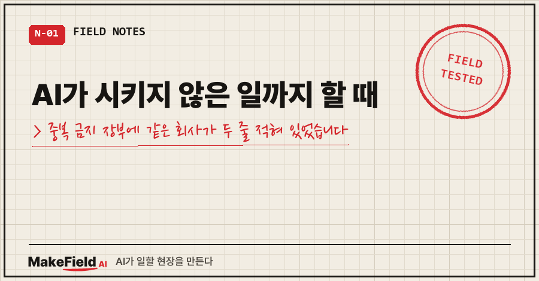
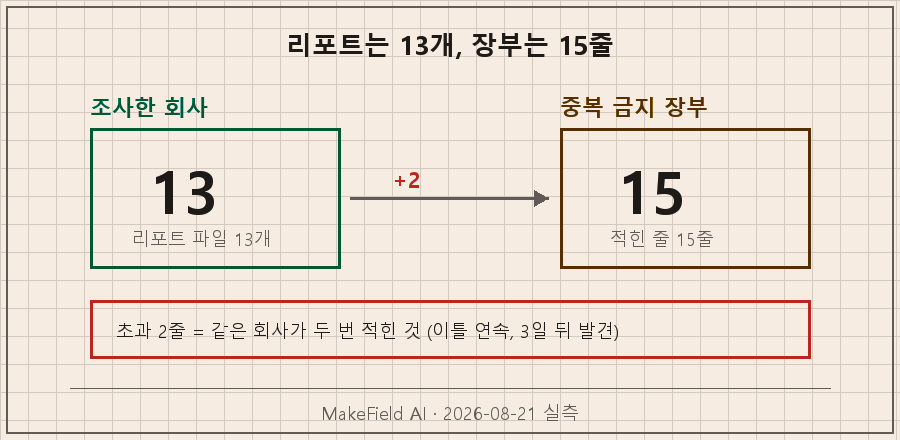
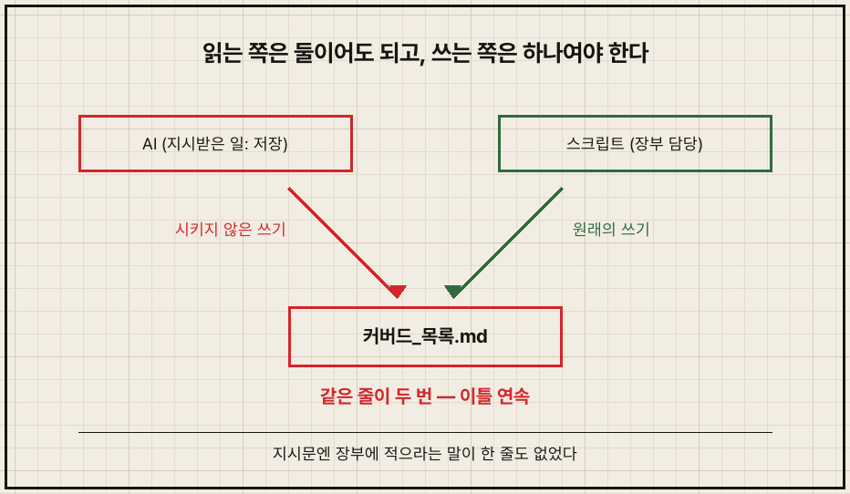
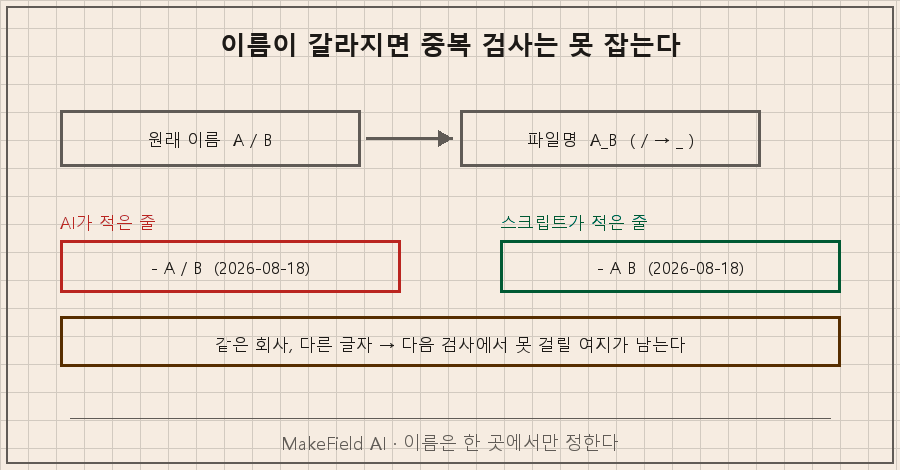

제 자동화가 쓰는 장부를 열었더니 이렇게 적혀 있었어요.
- On-Line Systems / Sierra On-Line (2026-08-18)
- On-Line Systems Sierra On-Line (2026-08-18)같은 회사가 두 줄. 그것도 하필 중복을 막으려고 만든 장부에서요.
AI가 시키지 않은 일까지 할 때 사고는 대개 이 모양으로 옵니다. 결과물이 틀리는 게 아니라, 같은 파일에 손대는 쪽이 둘이 돼요. 그래서 볼 자리도 결과물이 아니라 기록하는 손입니다.
제 본업은 공장 설비를 제어하는 일이에요. 도면 보고, 제어 로직 짜고, 현장에서 신호 하나하나 확인하는 일을 십오 년 했습니다.
그 바닥에선 이런 걸 아주 싫어해요. 같은 값을 두 군데서 쓰면 언젠가 반드시 어긋나거든요.
2026년 8월, 제 개인 PC에서 돌아가는 취미 자동화에서 벌어진 일입니다. 특정 AI 제품 얘기가 아니라 "파일을 쓸 수 있는 AI"면 다 해당돼요.
1. 새벽 5시에 사례 하나씩 조사하는 자동화가 있어요
공부하려고 만든 겁니다. 매일 새벽 5시에 AI가 사업 사례를 하나 조사해서 리포트 파일로 저장해요. 요일마다 시대가 정해져 있고요. 월요일은 옛날 기업, 목요일은 요즘 인디 창업자, 일요일은 망한 사례.
같은 회사를 두 번 조사하면 낭비잖아요. 그래서 장부를 하나 뒀습니다.
- 리노공업 (2026-08-08)
- 옐로모바일 (2026-08-09)
- 모나미 (2026-08-10)이 장부는 그냥 기록이 아니에요. 다음 날 AI한테 넘기는 지시문에 통째로 들어갑니다. "여기 적힌 기업은 절대 고르지 마라"고요.
그러니까 이 파일이 어긋나면 다음 날 조사가 어긋납니다.
2. 열세 곳을 조사했는데 열다섯 줄이 있었어요
8월 8일에 시작해서 8월 21일까지, 리포트 파일은 열세 개였습니다. 그런데 장부는 열다섯 줄이었어요.
두 건이 겹쳐 있었습니다.
- On-Line Systems / Sierra On-Line (2026-08-18)
- On-Line Systems Sierra On-Line (2026-08-18)
- 다나와 (2026-08-19)
- 다나와 (2026-08-19)아래 두 줄은 글자까지 똑같아요. 위의 두 줄은 슬래시 하나가 다르고요.
이틀 연속입니다. 그리고 저는 3일이 지나서야 봤어요.

3. 기록하는 손이 둘이었습니다
지시문부터 열어봤어요. AI한테 시킨 건 이게 전부입니다.
[저장 지시]
- 완성된 리포트를 Write 도구로 다음 경로에 저장하라: <사례폴더>\{날짜}_기업명.md
(기업명의 공백·슬래시는 _로 치환)
- 저장 후 마지막 줄에 정확히 다음 형식으로 출력하라: SAVED: <저장한 절대경로>리포트를 저장해라, 경로를 출력해라. 끝이에요. 장부에 적으라는 말은 한 줄도 없습니다.
장부에 적는 건 원래 스크립트 일이거든요. AI 작업이 끝나면 파일 이름을 읽어서 한 줄 붙이게 돼 있어요.
그런데 그날 로그를 보니 이렇습니다.
05:04:22 | - 커버드 목록과 중복 없음 — 목록에도 1줄 추가했습니다
05:04:22 커버드 장부 추가: On-Line Systems Sierra On-Line윗줄은 AI가 한 말이고, 아랫줄은 스크립트가 한 일이에요.
AI가 먼저 한 줄 적었고, 3초 뒤에 스크립트가 또 한 줄 적었습니다. 다음 날도 똑같았어요. "커버드 목록에도 - 다나와 (2026-08-19) 한 줄을 추가했습니다"라고 로그에 남아 있고, 바로 아래 스크립트가 다시 한 줄.
왜 시키지도 않은 일을 했을까요.
지시문 위쪽에 이런 제목의 목록을 붙여줬거든요. [커버드 목록(중복 금지)].
읽으라고 준 자료였는데, 이 장부를 관리하는 것도 자기 일이라고 읽은 겁니다. 파일 쓰기 권한도 이미 쥐고 있었고요.

더 고약한 건 그다음이에요. 겹친 두 줄이 서로 다르게 적혔다는 것.
제가 지시문에 이렇게 써놨거든요. "기업명의 공백·슬래시는 _로 치환해서 파일명을 만들어라."
그래서 파일 이름은 On-Line_Systems_Sierra_On-Line이 됐고, 스크립트는 이 이름에서 밑줄을 공백으로 되돌려 장부에 적습니다. 슬래시는 그 과정에서 사라져요.
AI가 직접 적은 줄엔 슬래시가 살아 있고, 스크립트가 적은 줄엔 없습니다. 같은 회사인데 컴퓨터가 보기엔 다른 이름이에요.
중복 검사는 글자가 정확히 같아야 걸립니다. 이름이 두 개로 갈라져 있으면, 나중에 다른 표기로 같은 회사가 다시 뽑힐 여지가 남아요.

4. AI는 이미 알고 있었어요
여기가 제일 뜨끔했던 부분입니다.
8월 20일 로그예요.
05:05:33 | 커버드 목록은 daily_bizcase.py가 자동 추가하는 장부라 중복 방지를 위해 직접 손대지 않았습니다(기존에 이중 등록된 항목 2건 존재).AI가 스스로 알아냈어요. 이 장부는 스크립트가 관리한다는 것, 그래서 자기가 손대면 안 된다는 것, 그리고 이미 두 건이 겹쳐 있다는 것까지.
손을 뗐고, 보고까지 남겼습니다. 그날부터 중복은 안 생겼어요.
문제는 그 보고를 읽은 사람이 없었다는 겁니다.
저는 매일 아침 리포트만 읽었지 로그는 안 봤거든요. 사고 보고서가 사흘 동안 폴더 안에 얌전히 있었어요..
무인 자동화의 실패는 대개 이렇게 조용합니다. 아무것도 안 멈추고, 빨간 불도 안 들어와요. 종료 코드는 계속 0이고 하트비트도 OK로 찍혀 있습니다. 그동안 파일 하나가 천천히 어긋나고 있을 뿐이에요.
이런 질문이 나올 것 같아서
Q. AI한테 파일 쓰기 권한을 아예 안 주면 되지 않나요?
그럼 리포트 저장도 못 합니다. 이건 권한 문제가 아니라 담당 문제예요. 같은 파일을 둘이 읽는 건 괜찮아요. 고치는 쪽이 둘이면 사고가 납니다. 현장에서 같은 신호를 두 군데서 쓰는 걸 싫어하는 이유랑 똑같아요.
Q. 두 줄 겹친 게 그렇게 큰일인가요?
이번 건은 큰일 아니었어요. 리포트 열세 개는 멀쩡했고요. 다만 저 장부가 다음 날 지시문의 입력이라는 게 걸립니다. 읽기용 자료가 아니라 판단의 근거니까요. 그리고 3일 동안 못 봤다는 사실은 두 줄보다 더 마음에 걸렸습니다.
고칠 자리는 세 군데로 좁혔어요
솔직히 말하면 아직 손은 안 댔습니다. 어디를 고칠지만 정해뒀어요.
- 지시문에 한 줄 추가: "이 목록은 읽기만 해라. 장부는 스크립트가 적는다." 시키지 않은 걸 안 하길 기대하는 것보다, 하지 말라고 적는 게 빠릅니다.
- 이름 형식을 하나로: 장부에 적히는 이름은 스크립트가 정한 방식 하나만 쓰게. 같은 대상이 두 이름을 가지면 검사는 못 잡아요.
- 로그 마지막 줄만이라도 보기: 매일 안 읽을 거면 안 읽는 걸 전제로, 이상한 낌새만 눈에 띄게 만들어야죠.
정리하면 이렇습니다. AI가 시키지 않은 일까지 할 때 의심할 곳은 결과물이 아니라 그 파일을 누가 고칠 수 있는지예요. 읽으라고 준 자료가 고쳐도 되는 자료로 읽히지는 않는지, 그리고 그 사실을 알려주는 보고가 아무도 안 여는 폴더에 쌓이고 있지는 않은지.
여러분이 돌리는 자동화에서 같은 파일에 손대는 쪽은 몇 곳인가요?
makefield.ai에는 이런 자잘한 사고들이 날짜순으로 쌓여 있습니다.
태그: #AI가시키지않은일 #AI자동화중복 #AI파일수정권한 #자동화로그확인 #AI에게일시키기 #AI프롬프트작성법 #AI에이전트 #무인자동화 #파이썬자동화 #스케줄러자동화 #AI결과물검수 #AI로일하기 #개인AI에이전트 #현장엔지니어 #MakeFieldAI